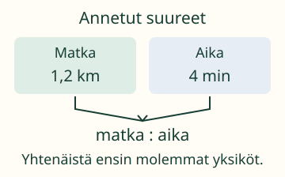
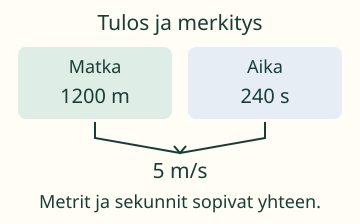
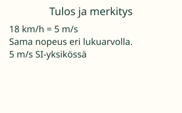
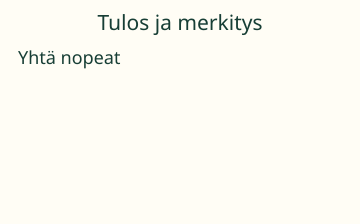

Aava sai matkan kilometreinä ja ajan minuutteina.
Laske nopeus sopivissa yksiköissä.

Saatko jakaa 1,2 luvulla 4 ja merkitä tuloksen m/s? Mieti, mitä yksiköitä luvut kuvaavat.
1 km = 1000 m. 100 cm = 1 m. 1 min = 60 s. 1 h = 3600 s.
Esimerkit ja selitykset
Ensin molemmat yksiköt
1,2 km on 1200 m. Neljä minuuttia on 240 s. Keskinopeus on 1200 m : 240 s = 5 m/s. Matka ja koko kulunut aika kuuluvat samaan matkaan.

Sama nopeus, eri lukuarvo
18 km/h tarkoittaa 18000 metriä 3600 sekunnissa. Se on 5 m/s. Kerroin km/h → m/s on täsmälleen 1000/3600 = 5/18. Toiseen suuntaan kerroin on 18/5 eli 3,6.

Siirrä idea vertailuun
10 m/s ja 36 km/h ovat yhtä suuret nopeudet. Pelkkä suurempi lukuarvo ei tarkoita suurempaa nopeutta, jos yksiköt ovat erilaiset.

Huomaa: 1200 : 4 = 300 on tässä 300 m/min, ei 300 m/s. Minuutissa on 60 sekuntia, ei sata.
Kokeile itse
Voit vastata suoraan. Kuva ja apu ovat käytettävissä.
Apua laskemiseen
Muunna 1,2 km metreiksi ja 4 min sekunneiksi. Älä jaa metrejä minuuteilla, jos pyydetäänm/s.
Pilkku tai piste käy. Luvun lopun nollat eivät muuta arvoa. Tarkka murtoluku, kuten 5/18, käy. Jos määrä on oikein eri yksikössä, palaute kertoo sen ja pyytää vielä tehtävän yksikön.
Lisähaaste ja rajatapaukset
Miksi 1 km/h = 5/18 m/s mutta ei täsmälleen 0,28 m/s? Kokeile lisätehtävää murtolukuna. Muunnoksen vastauksen saat tarkistaa kertomalla takaisin.
Opettajalle ja ilman ruutua
Vuosiluokat 7–9. Kohde on sekayksiköiden yhtenäistäminen ennen nopeuden laskemista. Keskinopeus käyttää kokonaismatkaa ja samaan matkaan kuuluvaa koko kulunutta aikaa, mahdolliset pysähdykset mukana. Se ei kerro hetkellistä nopeutta. Tässä annetut luvut ovat laskun lähtötietoja, eivät ruudulla mitattua liikettä.
Kirjoita kahdelle lapulle 1,2 km ja 4 min. Käännä ne samoja suureita kuvaaviksi lapuiksi 1200 m ja 240 s. Perustele, miksi molemmat muunnokset tarvitaan. Aito mittanauhan ja kellon käyttö tehdään erikseen aikuisen kanssa.
Laskumallin neljä vaihetta ovat päättelyn näkyvä tuki. Ne eivät kuvaa kulunutta aikaa tai mitattua liikettä. Suureiden syötealue on 0–1000000; yksiköt ovat vain m, km, cm, s, min, h, m/s ja km/h oman suureensa mukaisesti. Valmiit tehtävät käyttävät tämän alueen pieniä osia. Negatiivista suuntaa tai kiihtyvää liikettä ei tässä mallinneta.
Harjoitus on vain tämän sivun laskutukea, vastauksia ei tallenneta. Se ei osoita muistamista, itsenäistä hallintaa tai fyysistä mittaustaitoa. Syötteen tekninen raja on 128 merkkiä, murtoluvun osissa 24 numeroa ja desimaalissa 12 merkitsevää desimaalipaikkaa. Rajan ylitys hylätään, ei pyöristetä.
Lähtökysymys: Miksi 300 m/min ja 5 m/s voivat tarkoittaa samaa nopeutta?